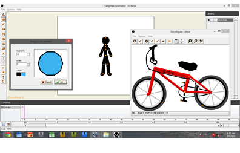

Twigmax Animator 1.2 Beta
September 2013

What is Twigmax Animator?
Twigmax Stickfigure Animator is a keyframe based stickfigure modeling and animation program for Windows that allows you to create awesome stickfigure animations.
Completely Free - No Strings Attached
Twigmax is freeware, meaning it’s completely free to download and use to create animations that you can show off to others or import into other applications. No hidden costs, license or permission are required to use Twigmax to its fullest.
Features:
1. Keyframe based.
2. Multi-colored segments and circle fills.
3. Scale/Rotate figure.
4. Flip figures.
5. Figure and Segments layering.
6. Stretch figure segments.
7. Zoom function in figure editor.
8. 30,000 animation frames.
9. Export to avi/separate frame images.
10. Completely free.
Click download to download Twigmax Animator and start your fun.
Improvments since version 1.1.1
#fixed - when send to back, the width of the sticks does not change.
#fixed - clicking new, the onion skin of the previous animation is still appear.
#fixed - when selecting other figure, the onion skin of the previous sticks is still appear.
#added - keyboard shortcuts, look for commands menu
#added - ability to load background images.